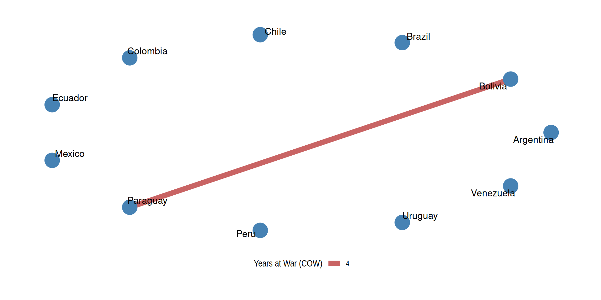
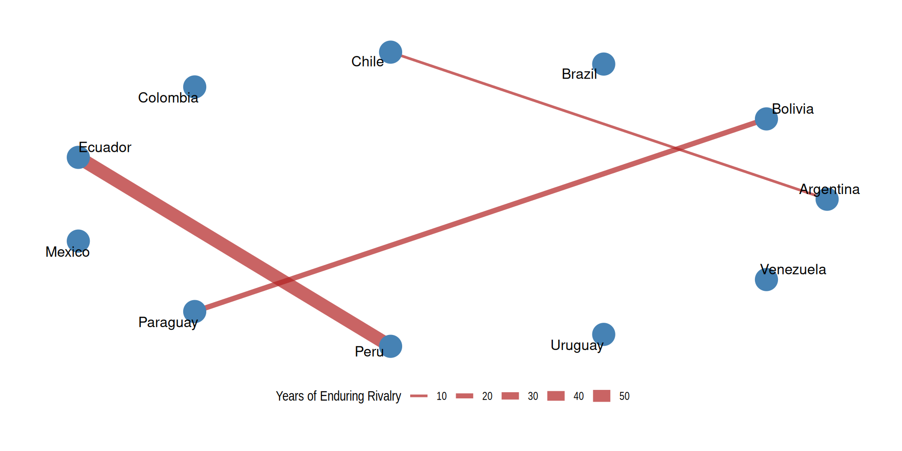
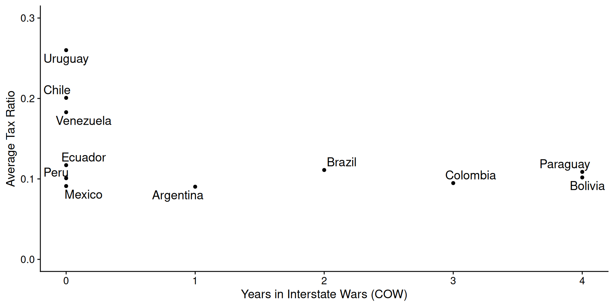
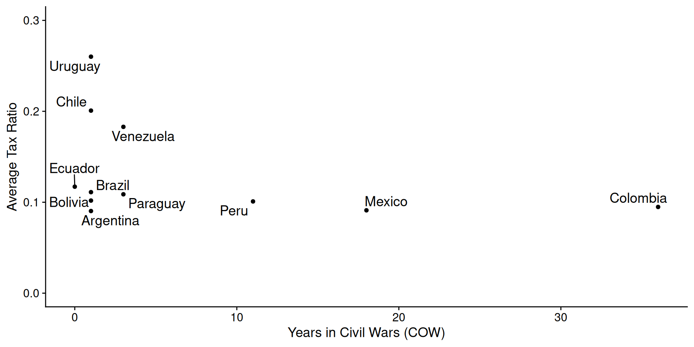
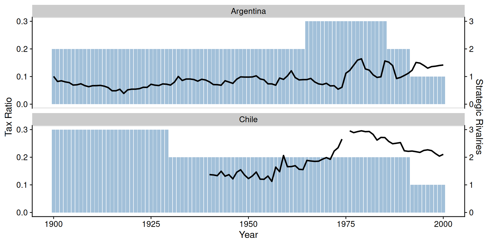
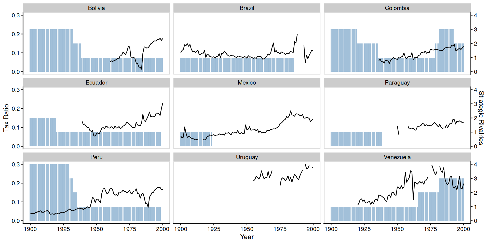
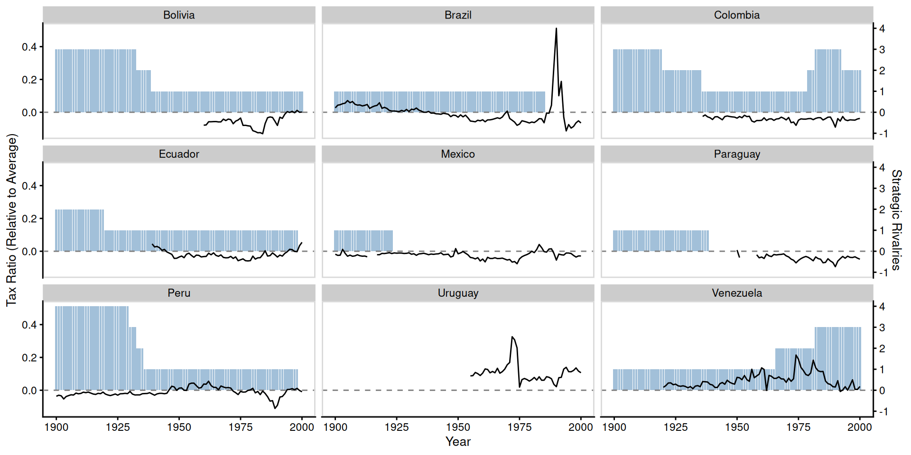

| (1) | (2) | (3) | (4) | |
|---|---|---|---|---|
| * p < 0.05 | ||||
| p-values from wild bootstrap clustered by country (999 replications). All models include cubic time trend. | ||||
| Interstate wars (last 10 years) | -0.017* | |||
| SE = 0.007 p = 0.020 |
||||
| Civil wars (last 10 years) | -0.005* | |||
| SE = 0.002 p = 0.005 |
||||
| Strategic rivalries | -0.002 | |||
| SE = 0.012 p = 0.894 |
||||
| Enduring rivalries | -0.011 | |||
| SE = 0.012 p = 0.382 |
||||
| Number of country-years | 768 | 768 | 768 | 768 |
| R2 | 0.279 | 0.289 | 0.270 | 0.272 |
War and statebuilding in Latin America
PSCI 2227: War and State Development
February 4, 2026
Recap
Warmaking and statemaking
- Tilly’s theory
- War makes states — develop or die out
- Institutional developments persist into peace — and increase the incentive for further war
- Commercial/capitalist states advantaged in both ends of process
- Abramson’s skeptical take
- States didn’t grow when war became more capital-intensive
- Smaller states were more likely to survive
- Urbanization drove the formation of — mostly small — states
Today’s agenda
- Latin America as a “hard case” for the theory
- Thies’ alternative: rivalry (threat of war) as driver of statebuilding
- Reanalyzing the data on war, rivalry, and tax capacity
Theory
Generality of the war-and-statebuilding logic
Reminder of the basic logic
- Success in military competition requires troops and equipment
- Troops and equipment cost money — a lot of money
- Large territorial states are best equipped to raise that money
- … and can use these tools to consolidate power internally too
Theory came out of studying European history
…but when you boil it down to these parts, none of it is Europe-specific
Problems for the Tilly story outside Europe
Why the theory is plausible for Europe
- Europeans fought lots of wars against each other
- Sovereign, territorial states emerged relatively early in Europe
But it’s hard to see “war made the state” elsewhere
- Interstate war has been much less common outside Europe
- And yet sovereign territorial states came to dominate worldwide
- Maybe European colonialism can explain emergence of territorial states, but not as much persistence in post-colonial era
Latin America as test case
Latin America is a “hard case” for the non-European application of the theory
Basic facts to contend with:
Vast majority of region gained independence 1800s–1830s
Major interstate wars have rarely occurred in the region
| War | Years | Belligerents | Deaths |
|---|---|---|---|
| War of the Triple Alliance | 1864–1870 | Paraguay vs Argentina, Brazil, Uruguay | ~300,000–400,000 |
| War of the Pacific | 1879–1884 | Chile vs Bolivia, Peru | ~15,000–20,000 |
| Chaco War | 1932–1935 | Bolivia vs Paraguay | ~90,000–100,000 |
- Borders have barely changed since independence movements
Stability of Latin American borders


Thies’ theory: Rivalry made the state
Why is war important in Tilly’s model?
- Impetus to raise revenue and become more efficient at coercion
- Prunes out political organizations that fall behind
The first of these should still operate under just the threat of war
Key concept for Thies: interstate rivalry as longstanding war threat
- “enduring” rivalry: 6+ low-level conflicts in 20-year period
- “strategic” rivalry: policymakers perceive rival as serious military threat
Unlike war, rivalry varies a lot over space + time in Latin America
Not many wars in Latin America, 1900–2000
But many strategic rivalries, 1900–2000

(enduring rivalries are in between)
Thies’ expectations
- Sustained external rivalry spurs statebuilding
- Provides impetus to raise revenue and become efficient
- Expect gradual increase in state capacity rather than sudden bursts
- Internal conflict hurts statebuilding
- Undermines legitimacy of state
- Saps resources that would be used to build capacity
- Interstate war doesn’t help or hurt
- Key difference with medieval Europe: common access to debt finance
- Less need to raise revenue domestically
- (more on this in a couple weeks when we read Queralt)
Data
Measuring statebuilding
Thies collects annual data on South America, 1900–2000
- didn’t do Central America because some sociologist didn’t either 🤷🏻♂️
Dependent variable: tax ratio
- Annual tax revenue as a fraction of gross domestic product
- e.g.:
tax_ratiofor Argentina 1975 = 0.112 - means tax revenues were 11.2% of Argentina’s economy
- e.g.:
- Proxy for the state’s extractive capacity (success as a stationary bandit)
Implicit assumption: how much the state actually raises is proportional to how much it can raise
Redoing the data analysis here
Sorry to say, this article is basically a disasterclass in how to not do statistics
- No presentation of descriptive statistics, just complicated regressions
- “Bad controls”: variables possibly affected by the treatment
- Treatments = interstate war history, civil war history, rivalries
- Bad controls = democracy, debt, GDP, inflation, trade, agriculture (i.e., everything but the time trend)
- Technical: poor measures of statistical error (no clustering by country)
- Makes lots of causal claims using exclusively correlational evidence
So I pulled the independent variables from the tables, reconstructed the tax ratio from MOxLAD, and redid the analysis how I like it
Interstate war and tax ratio
Civil war and tax ratio
Strategic rivalries and tax ratio

Did rivalry make the state in Argentina and Chile?
What about the rest of Latin America?
Tax ratio compared to regional average

Tax ratio compared to regional average
Regression results (pooled)
Regression results (country fixed effects)
| (1) | (2) | (3) | (4) | |
|---|---|---|---|---|
| * p < 0.05 | ||||
| p-values from wild bootstrap clustered by country (999 replications). All models include cubic time trend and country fixed effects. | ||||
| Interstate wars (last 10 years) | -0.004 | |||
| SE = 0.004 p = 0.333 |
||||
| Civil wars (last 10 years) | -0.001 | |||
| SE = 0.001 p = 0.441 |
||||
| Strategic rivalries | -0.010* | |||
| SE = 0.005 p = 0.042 |
||||
| Enduring rivalries | 0.009 | |||
| SE = 0.006 p = 0.182 |
||||
| Number of country-years | 768 | 768 | 768 | 768 |
| R2 | 0.661 | 0.661 | 0.667 | 0.661 |
Conclusions
Both types of war negatively correlated with tax ratios
Rivalry also negatively correlated with tax ratios
No correlation robustly distinguishable from statistical noise
“Eye test” doesn’t suggest any particularly strong patterns either
My conclusions:
- Whatever variation exists in Latin American tax ratios, it’s hard to trace to actual war or preparations for wars that didn’t happen
- Tilly is a much better guide to Europe (even if flawed) than to Latin America
Wrapping up
What we did today
- Examined whether Tilly’s bellicist theory travels outside Europe
- Latin America: few interstate wars, stable borders, yet sovereign states persisted
- Thies’ alternative: interstate rivalry (threat of war) spurs statebuilding
- Looked at the data: wars, rivalries, and tax ratios across South America 1900–2000
- Found little robust evidence that war or rivalry drove state capacity in the region
Next time
War and statebuilding in China
- Dincecco and Wang 2018, “Violent Conflict and Political Development over the Long Run: China Versus Europe”
- Reading guide to be posted by Friday
Have a good weekend!